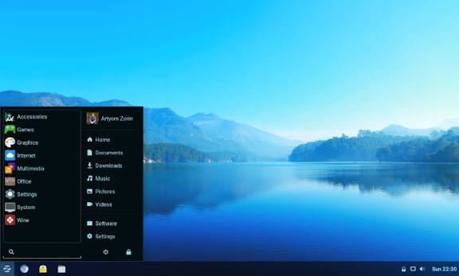

Zorin OS Lite
Облегчённая версия Zorin OS для очень старого оборудования.
История
Zorin OS Lite — это версия популярного дистрибутива Zorin OS, основанная на рабочем столе Xfce. Она предназначена для компьютеров с ограниченными ресурсами, которые не могут работать на основной версии.
Особенности
- Основана на Zorin OS (Ubuntu).,Лёгкий рабочий стол Xfce.,Знакомый интерфейс, похожий на Windows.,Низкие системные требования.
Кому подходит
Владельцам старого оборудования, которые хотят получить современный и знакомый интерфейс.
Как скачать
Официальный сайт: https://zorin.com/os/download/.
Скриншот
